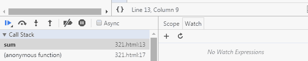
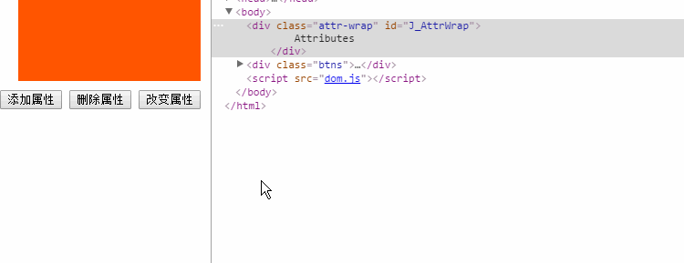

Consejo amistoso: El artículo contiene muchas animaciones GIF de demostración. En dispositivos móviles, lea preferiblemente en un entorno Wi-Fi.
Prefacio: Las técnicas de depuración son sin duda una habilidad indispensable en cualquier investigación y desarrollo tecnológico. Dominar diversas técnicas de depuración seguramente producirá el doble de resultado con la mitad de esfuerzo en el trabajo. Por ejemplo, localizar rápidamente problemas, reducir la probabilidad de fallos, ayudar a analizar errores lógicos, etc. Hoy en día, cuando el desarrollo frontend de Internet es cada vez más importante, dominar las técnicas de depuración del frontend es especialmente crucial para reducir costos de desarrollo y mejorar la eficiencia laboral.
Este artículo explicará una por una varias técnicas de depuración de JS en el frontend. Quizás ya las domines, entonces repasémoslas juntos; quizás haya métodos que no hayas visto, podemos aprenderlos juntos; quizás aún no sepas cómo depurar, aprovecha esta oportunidad para llenar ese vacío.
1. Alert, el maestro de depuración de nivel veterano
Era la época en que Internet apenas comenzaba. El frontend de las páginas web se centraba principalmente en la exhibición de contenido, y los scripts del navegador solo podían proporcionar funciones auxiliares muy simples a la página. En ese entonces, las páginas web se ejecutaban principalmente en navegadores dominados por IE6, y la capacidad de depuración de JS era muy débil. Solo se podía depurar mediante el método alert integrado en el objeto Window. En aquel momento, probablemente se veía así:

Cabe aclarar que el efecto que se ve aquí no es el que se veía en los navegadores IE de aquel entonces, sino el efecto en una versión superior de IE. Además, en ese entonces aparentemente no existía una consola tan avanzada, y el uso de alert se realizaba en el código JS real de la página. Aunque el método de depuración con alert es muy primitivo, en su momento tuvo un valor indeleble, e incluso hoy en día todavía tiene su lugar.
2. Console, el nuevo rey de la depuración
A medida que JS puede hacer cada vez más cosas en el frontend web, su responsabilidad y su estatus son cada vez más importantes. El método tradicional de depuración con alert ha dejado gradualmente de satisfacer los diversos escenarios del desarrollo frontend. Además, la ventana de información de depuración que aparece con alert no es nada estética y bloquea parte del contenido de la página, lo que resulta poco amigable.
Por otro lado, la información de depuración de alert requiere agregar sentencias como 'alert(xxxxx)' en la lógica del programa para funcionar, y alert impide que la página continúe renderizándose. Esto significa que los desarrolladores deben eliminar manualmente ese código de depuración después de terminar, lo cual es bastante molesto.
Por lo tanto, los nuevos navegadores como Firefox, Chrome, e incluso IE, lanzaron sucesivamente consolas de depuración de JS que admiten el uso de formas como 'console.log(xxxx)' para imprimir información de depuración en la consola sin afectar directamente la visualización de la página. Tomando IE como ejemplo, se ve así:

Bien, adiós a la fea ventana emergente de alert. Y los nuevos navegadores liderados por Chrome han ampliado la Console con funciones más ricas:

¿Crees que eso ya es suficiente? La imaginación del equipo de desarrollo de Chrome es realmente admirable:

Bien, he divagado un poco. En resumen, la aparición de la consola y del objeto Console integrado en los navegadores ha brindado una gran comodidad a la depuración en el desarrollo frontend.
Alguien preguntará: ¿este tipo de código de depuración no necesita también limpiarse después de terminar la depuración?
Con respecto a este problema, si se verifica la existencia del objeto console antes de usarlo, en realidad no eliminarlo no dañará la lógica de negocio. Por supuesto, para mantener el código limpio, después de la depuración, se debe intentar eliminar en la medida de lo posible estos códigos de depuración que no están relacionados con la lógica de negocio.
3. Depuración de puntos de interrupción en JS
Un punto de interrupción es una de las funciones del depurador: permite que el programa se detenga en el lugar deseado para facilitar su análisis. También se pueden establecer puntos de interrupción en una sesión de depuración; la próxima vez solo hay que dejar que el programa se ejecute automáticamente hasta la posición del punto de interrupción, y se detendrá en el punto establecido anteriormente, lo que facilita enormemente la operación y ahorra tiempo. — Baidu Baike
La depuración con puntos de interrupción en JS consiste en agregar puntos de interrupción al código JS en las herramientas de desarrollo del navegador, haciendo que JS se detenga en una posición específica para facilitar al desarrollador el análisis y el procesamiento lógico de ese fragmento de código. Para poder observar el efecto de la depuración con puntos de interrupción, preparamos de antemano un fragmento de código JS al azar:

El código es muy simple: define una función que recibe dos números, les suma un entero aleatorio cualquiera y luego devuelve la suma de ambos. Tomando las herramientas de desarrollo de Chrome como ejemplo, veamos el método básico de depuración con puntos de interrupción en JS.
3.1. Puntos de interrupción en Sources
En primer lugar, en el código de prueba podemos ver a través de la salida de console en la figura anterior que el código debería haberse ejecutado normalmente. Pero, ¿por qué digo 'debería'? Porque se agregó un número aleatorio en la función, y ¿es realmente correcto el resultado final? Esta es una conjetura sin sentido, pero supongamos que ahora quiero verificar los dos números pasados a la función, el número aleatorio agregado y la suma final. Entonces, ¿cómo se hace?
Método 1: como se mencionó antes, el más común. Ya sea usando alert o console, podemos verificar de esta manera:

Como se ve en la figura anterior, agregamos tres líneas de código console en el código para imprimir las variables de datos que nos interesan. Finalmente, a partir de los resultados de salida en la consola (panel Console), podemos verificar claramente si todo el proceso de cálculo es normal, cumpliendo así los requisitos de verificación planteados.
Método 2: La desventaja evidente del método 1 es que se agrega mucho código redundante. A continuación, veamos si es más conveniente verificar usando puntos de interrupción. Primero veamos cómo agregar un punto de interrupción y qué efecto tiene:

Como se muestra en la figura, el flujo para agregar un punto de interrupción a un código es: 'F12 (Ctrl + Shift + I) para abrir las herramientas de desarrollo' — 'hacer clic en el menú Sources' — 'encontrar el archivo correspondiente en el árbol de la izquierda' — 'hacer clic en la columna del número de línea' para completar la operación de agregar/eliminar un punto de interrupción en la línea actual. Una vez agregado el punto de interrupción, al actualizar la página, JS se detiene en la posición del punto de interrupción. En la interfaz de Sources se verán todas las variables y valores en el ámbito actual; solo hay que verificar cada valor para cumplir los requisitos de verificación.
Ahora viene el problema: los más atentos notarán que cuando el código se ejecuta hasta el punto de interrupción, los valores mostrados de las variables a y b ya han pasado por la operación de suma; no vemos los 10 y 20 iniciales que se pasaron al llamar a la función sum. Entonces, ¿qué hacer? Aquí tenemos que volver atrás y aprender primero algunos conocimientos básicos sobre la depuración con puntos de interrupción. Al abrir el panel Sources, en realidad veremos el siguiente contenido en la interfaz. Sigamos el rastro del mouse y veamos qué significa cada cosa:

De izquierda a derecha, las funciones que representan los iconos son:
- Pause/Resume script execution: Pausar/reanudar la ejecución del script (el programa se detiene en el siguiente punto de interrupción).
- Step over next function call: Ejecutar hasta la siguiente llamada de función (saltar a la siguiente línea).
- Step into next function call: Entrar en la función actual.
- Step out of current function: Salir de la función actual en ejecución.
- Deactivate/Activate all breakpoints: Desactivar/activar todos los puntos de interrupción (no se cancelan).
- Pause on exceptions: Establecer punto de interrupción automático en caso de excepción.
En este punto, ya hemos cubierto casi todos los botones de función de la depuración con puntos de interrupción. Ahora podemos revisar nuestro código línea por línea y ver cómo cambian nuestras variables después de ejecutar cada línea, como se muestra en la siguiente figura:

Como se muestra arriba, podemos ver todo el proceso de las variables a y b: desde sus valores iniciales, pasando por la suma del valor aleatorio en el medio, hasta el cálculo final de la suma y la salida del resultado final. Cumplir con los requisitos de verificación planteados no es un problema.
Para los otros botones de función, modifiquemos un poco nuestro código de prueba y usemos una imagen gif para demostrar su uso:

Aquí hay que tener en cuenta un punto: la función de imprimir el valor de las variables directamente en el área de código es una función nueva agregada en versiones más recientes del navegador Chrome. Si todavía usas una versión anterior de Chrome, es posible que no puedas ver la información de las variables directamente en el punto de interrupción. En ese caso, puedes mover el mouse sobre el nombre de la variable y mantenerlo un momento para que aparezca su valor. También puedes seleccionar el nombre de la variable con el mouse y hacer clic derecho en 'Add to watch' para verlo en el panel Watch; este método también sirve para expresiones. Además, en un punto de interrupción, puedes cambiar al panel Console, escribir el nombre de la variable directamente en la consola y presionar Enter para ver su información. Esta parte es relativamente simple; por cuestiones de espacio, no haré una demostración con imágenes.
3.2. Puntos de interrupción con Debugger
El llamado punto de interrupción con Debugger es en realidad un nombre que yo mismo le he dado; no sé cuál es el término profesional. Concretamente, consiste en agregar la sentencia 'debugger;' en el código, y cuando la ejecución llega a esa sentencia, se activa automáticamente un punto de interrupción. Las operaciones posteriores son casi idénticas a agregar un punto de interrupción en el panel Sources; la única diferencia es que después de depurar hay que eliminar esa sentencia.
Ya que, aparte de la forma de establecer el punto de interrupción, la función es la misma que la de agregar un punto de interrupción en el panel Sources, ¿por qué existe entonces esta forma? Creo que la razón debería ser esta: en el desarrollo, ocasionalmente nos encontramos con situaciones en las que se carga asincrónicamente un fragmento de HTML (que contiene código JS incrustado), y esta parte del código JS no se puede encontrar en el árbol de Sources, por lo que no se puede agregar directamente un punto de interrupción en las herramientas de desarrollo. Entonces, si se quiere agregar un punto de interrupción a un script cargado asincrónicamente, 'debugger;' juega su papel. Veamos su efecto directamente con una imagen gif:

4. Depuración de puntos de interrupción en DOM
Los puntos de interrupción en DOM, como su nombre lo indica, consisten en agregar puntos de interrupción en elementos del DOM para lograr el propósito de depuración. En la práctica, el efecto del punto de interrupción finalmente se materializa dentro de la lógica JS. Veamos uno por uno los efectos específicos de cada tipo de punto de interrupción en DOM.
4.1. Punto de interrupción cuando cambian los nodos secundarios internos de un nodo (Break on subtree modifications)
En la actualidad, donde el desarrollo front-end es cada vez más complejo, hay cada vez más código JS y la lógica se vuelve más compleja. Una página web aparentemente simple suele ir acompañada de grandes bloques de código JS, que implican muchas operaciones de añadir, eliminar y modificar nodos DOM. Es inevitable encontrar situaciones en las que es difícil localizar un fragmento de código directamente mediante el código JS, pero a través del panel Elements de las herramientas de desarrollo podemos localizar rápidamente el nodo DOM relevante. En este momento, localizar el script mediante puntos de interrupción DOM resulta especialmente importante. Veamos la demostración con un GIF:

El ejemplo anterior demuestra el efecto de los puntos de interrupción que se disparan al añadir, eliminar o intercambiar el orden de los nodos secundarios (li) de ul. Pero hay que tener en cuenta que modificar atributos o contenido de los nodos secundarios no disparará un punto de interrupción.
4.2. Puntos de interrupción cuando cambian los atributos del nodo (Break on attributes modifications)
Por otro lado, dado que la lógica de negocio que maneja el front-end es cada vez más compleja, la dependencia del almacenamiento de ciertos datos es cada vez mayor, y almacenar datos temporales en atributos (personalizados) de los nodos DOM es, en muchos casos, la forma que los desarrolladores prefieren elegir. Especialmente después de que el estándar HTML5 mejorara el soporte de atributos personalizados (por ejemplo, dataset, data-*, etc.), la aplicación de atributos es cada vez más frecuente, por lo que las herramientas de desarrollo de Chrome también ofrecen soporte de puntos de interrupción por cambios de atributos. El efecto es aproximadamente el siguiente:

Con este método también hay que tener en cuenta que cualquier operación sobre los atributos de los nodos secundarios no disparará el punto de interrupción del nodo en sí.
4.3. Punto de interrupción cuando se elimina un nodo (Break on node removal)
Este punto de interrupción DOM es muy sencillo de configurar y su forma de activación es muy clara: cuando el nodo se elimina. Por lo tanto, normalmente se usa al ejecutar la sentencia "parentNode.removeChild(childNode)". Este método no se usa mucho.
Lo que se ha presentado anteriormente son básicamente las técnicas de depuración que usamos a menudo en el desarrollo diario; si se usan adecuadamente, pueden resolver casi todos los problemas del desarrollo cotidiano. Sin embargo, las herramientas de desarrollador también contemplan más situaciones y ofrecen más tipos de puntos de interrupción, como se muestra en la figura:

5、XHR Breakpoints
En los últimos años, el desarrollo front-end ha cambiado drásticamente: de ser poco conocido a estar en su apogeo actual. Ajax impulsa las aplicaciones web enriquecidas y las aplicaciones móviles de una sola página (WebApp) prosperan. Todo esto es inseparable del objeto XMLHttpRequest, y los "XHR Breakpoints" son precisamente la función de depuración por puntos de interrupción creada especialmente para la asincronía.

Podemos usar el signo "+" a la derecha de "XHR Breakpoints" para añadir condiciones de punto de interrupción a los puntos de interrupción asíncronos. Cuando la URL de la petición asíncrona disparada cumple esta condición, la lógica JS generará automáticamente un punto de interrupción. En la animación de demostración no se muestra la ubicación del punto de interrupción, porque la demostración usa el método ajax encapsulado de jQuery y el código ya está comprimido, por lo que no se ve ningún efecto. De hecho, el punto de interrupción de XHR se genera en la sentencia "xhr.send()".
La potencia de los puntos de interrupción XHR es que se pueden personalizar las reglas de los puntos de interrupción, lo que significa que podemos establecer puntos de interrupción para un grupo, uno concreto, o incluso todas las peticiones asíncronas. Es muy potente. Sin embargo, parece que esta función no se usa mucho en el desarrollo diario, al menos yo no la uso mucho. Pensando en las razones, hay aproximadamente dos: primero, este tipo de necesidad de depurar con puntos de interrupción no está muy presente en el negocio diario; segundo, el desarrollo front-end actual se basa mayoritariamente en frameworks JS; incluso el jQuery más básico ya encapsula bien Ajax, y muy pocos encapsulan sus propios métodos Ajax. Además, para reducir el tamaño del código, los proyectos suelen elegir bibliotecas de código comprimido, lo que hace que el seguimiento con puntos de interrupción XHR sea relativamente más difícil.
6、Event Listener Breakpoints
Los puntos de interrupción de escuchadores de eventos consisten en establecer puntos de interrupción según el nombre del evento. Cuando el evento se dispara, se detiene en el lugar donde está vinculado el evento. Los puntos de interrupción de escuchadores de eventos enumeran todos los eventos de página y de script, incluyendo: mouse, teclado, animación, temporizadores, XHR, etc. Reducen enormemente la dificultad de depurar la lógica de negocio relacionada con eventos.

El ejemplo de demostración muestra el efecto de los puntos de interrupción cuando se dispara el evento click y cuando se establece setTimeout. El ejemplo muestra que, después de seleccionar el punto de interrupción del evento click, al hacer clic en los dos botones se disparó el punto de interrupción; y cuando se establece setTimeout, se dispara el punto de interrupción "Set Timer".
La depuración es una parte muy importante en el desarrollo de proyectos; no solo nos ayuda a localizar problemas rápidamente, sino que también ahorra tiempo de desarrollo. Dominar bien las diversas técnicas de depuración sin duda traerá muchos beneficios para tu desarrollo profesional. Sin embargo, con tantas técnicas de depuración, elegir la que se adapte a tu escenario de aplicación actual requiere experiencia y una acumulación constante de intentos.
Autor: Zheng Wujiang
Fuente: http://seejs.me/2016/03/27/jsdebugger/
Haz clic para compartir notas
<p style="font-size:14px;">¡Las notas deben ser una extensión del contenido de este artículo!</p><br> <p style="font-size:12px;"><a href="../tougao.html" target="_blank">Para enviar un artículo, haz clic aquí</a></p> <p style="font-size:14px;"><a href="./runoob-user-test-intro.html" target="_blank">Cómo obtener el código de invitación de registro</a></p> <h3 class="text-muted"><i class="fa fa-info-circle" aria-hidden="true"></i> ¡Debes <a href=".." class="runoob-pop">iniciar sesión</a> antes de compartir notas!</h3> <p><a href="./runoob-user-test-intro.html" target="_blank">Cómo obtener el código de invitación de registro</a></p>